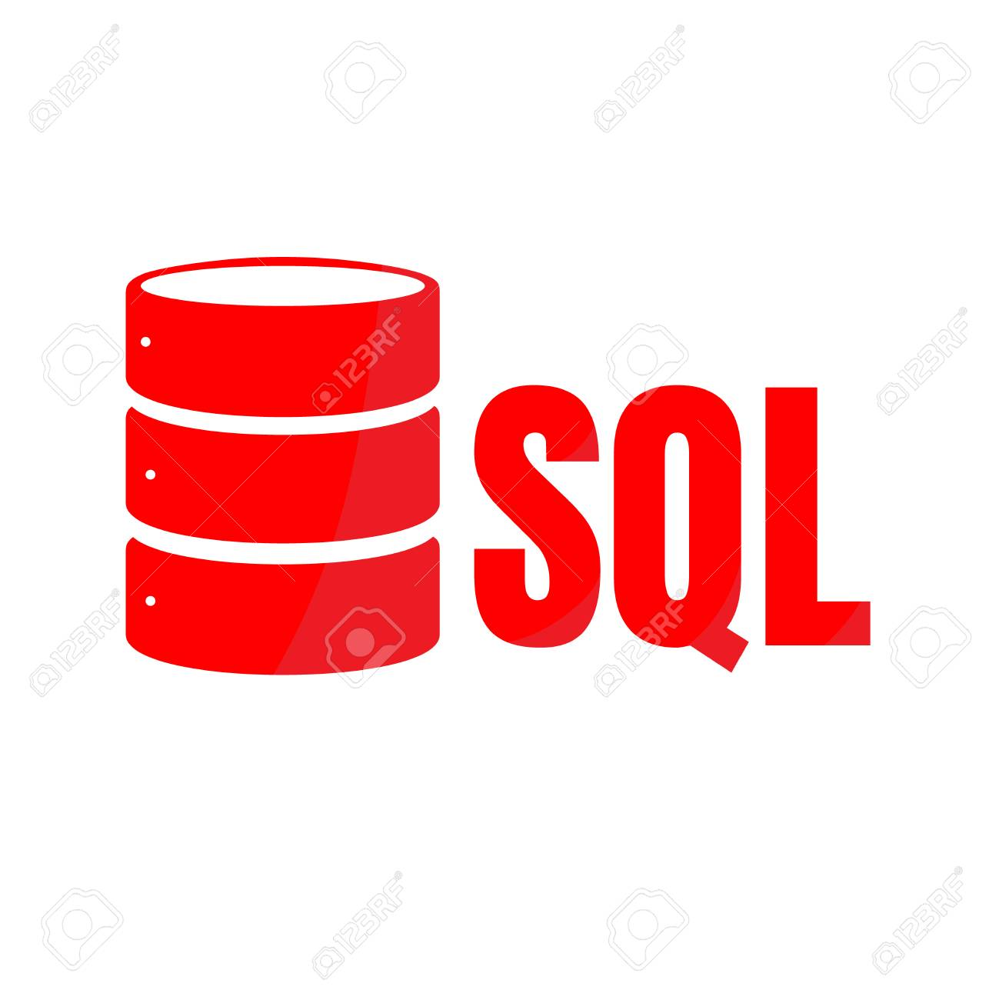
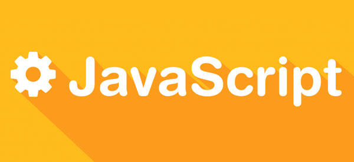
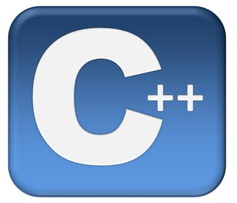
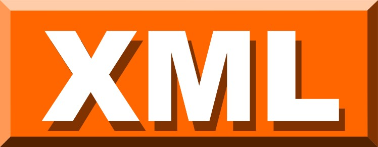

SQL: Este lenguaje está creado para realizar consultas a bases de datos principalmente. SQL son las siglas de Structured Query Lenguaje ( Lenguaje estructurado de consultas) y se utiliza para páginas web y también para aplicaciones de ordenadores, para manejar datos sobre todo. (Introducir datos, actualizar datos, eliminar o seleccionar datos)

Java: Probablemente éste podría ser el favorito de más de uno ya que es el lenguaje utilizado para programas punteros como herramientas, juegos y aplicaciones. Este lenguaje de programación se utiliza en miles de millones de dispositivos móviles y aparatos de televisión y en más de 850 millones de ordenadores personales de todo el mundo. Java está instalado en inmensidad de aplicaciones y sitios web.

JavaScript: Seguramente también te suene JavaScript, que es otro lenguaje utilizado para crear pequeños programas encargados de realizar acciones y dar interactividad dentro de una web como por ejemplo para crear efectos especiales, para definir interactividades con los usuarios, efectos de textos. Hoy en día es casi el único lenguaje usado en todas las páginas web por la compatibilidad con HTML5.

C: Este lenguaje de programación está orientado a los Sistemas Operativos y es muy eficaz y con él podemos crear Softwares de sistemas operativos como Windows o Linux y también para aplicaciones. También sirve para experimentos informáticos, físicos, matemáticos…etc. Es también muy utilizado en robótica con el que se programan simuladores, etc.

XML: Este lenguaje es también un lenguaje de etiquetas como el HTML, pero a diferencia de éste, el lenguaje XML separa el contenido de la presentación, es decir, XML se preocupa del significado del texto que define el HTML. Te da el dato + el significado de ese dato, mientras que el HTML te da el dato nada más. El XML es un complemento fundamental al HTML.

PHP: Es un lenguaje de programación similar al HTML que nos sirve fundamentalmente para páginas web y se puede combinar con el lenguaje HTML. El lenguaje PHP se basa en los “scripts” que es un guión de órdenes o instrucciones que recibe un servidor de una página web para leer su código fuente.